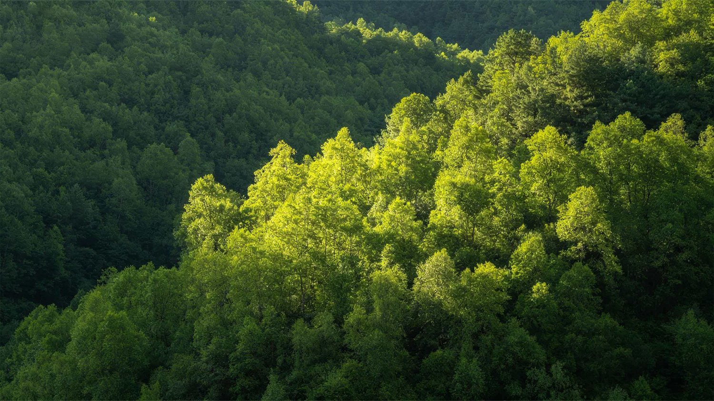
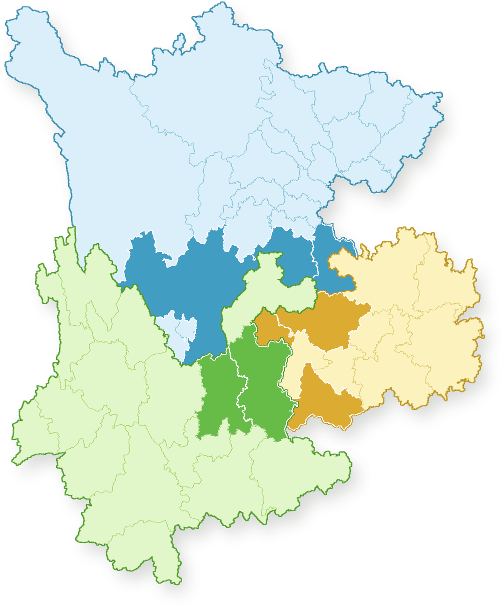

川滇黔省际毗邻地区生态富民数据库
首页
公益科普
典型案例
数据监测
价值实现
生态故事
公众参与
关于本站

区域数据监测
人口与经济
生态与治理
产业与发展
11地概览与公开数据检索

四川
贵州
云南
区域指标对比检索
全部省份
贵州
云南
四川
自动显示最新年份
选择对比指标
对比
重置
导出
当前覆盖
0
个地区
正在整理可比指标
排名
地区
数值
年份
来源
正在载入区域数据…
↑
↓
11地发展基础对比
地区生产总值与常住人口规模
全国石漠化变化
全国石漠化土地面积变化
2005—2021
三个调查期石漠化缩减速度
2005—2021
生态状况与区域变化
全国生态状况对比
2016 / 2021
川滇黔石漠化净减少
2016—2021
不同程度石漠化净减少
2016—2021